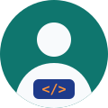

Página personal
Web personal publicada con GitHub Pages y tests automáticos.
- HTML
- CSS
- JavaScript
- GitHub Actions

Estudiante de DAW · Desarrollo web accesible
Una selección de los proyectos y prácticas que he realizado durante el ciclo. Cada tarjeta enlaza a su repositorio en GitHub.
Web personal publicada con GitHub Pages y tests automáticos.
Primer pipeline de integración continua con GitHub Actions.
Repositorio para practicar ramas, merges y pull requests.
Ejercicios y prácticas de Desarrollo Web en Entorno Servidor del curso 2026-27.